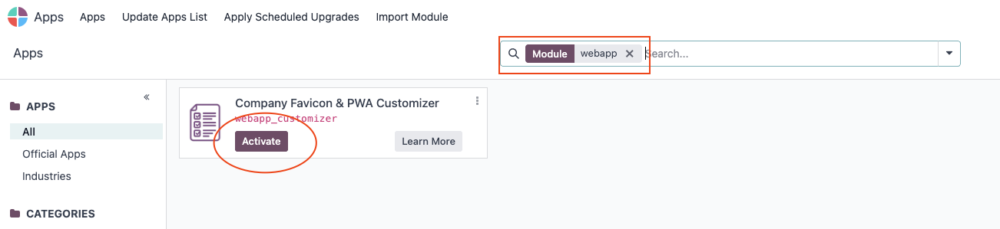
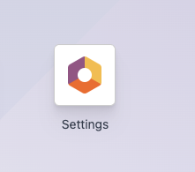
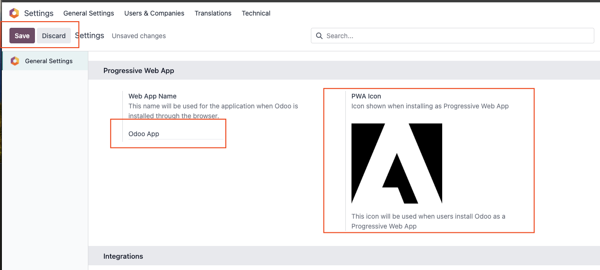
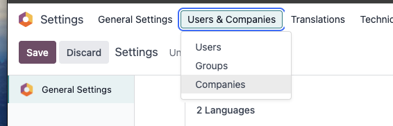
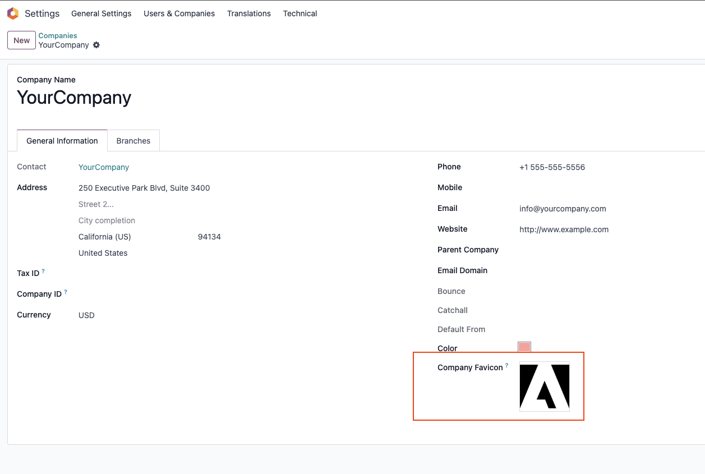
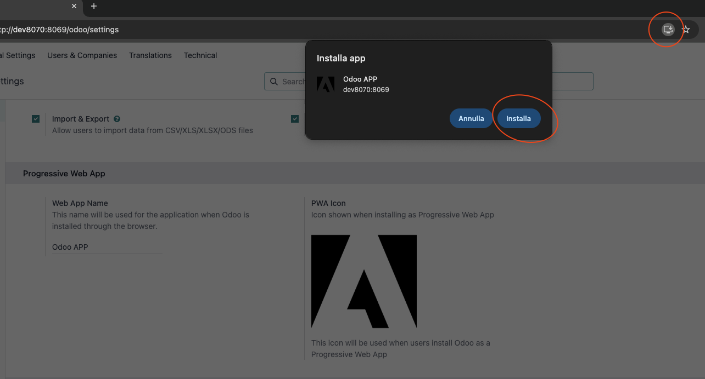

Set unique favicons for each company in your multi-company setup. Browser tabs and bookmarks will display the correct company branding automatically.
Customize the icon used when users install your Odoo as a Progressive Web App on their devices. Professional branding for mobile experiences.
New companies automatically get unique color-coded default favicons, making it easy to distinguish between different company environments.
Favicon automatically changes when switching between companies, providing immediate visual feedback about which company context you're working in.
Works perfectly with Odoo 18's native PWA system and integrates cleanly with existing company settings. No conflicts with other modules.
Simple setup through familiar Settings interface. Upload icons directly in company settings and PWA configuration. No technical expertise required.

Activate the Company Favicon & PWA Customizer module from the Apps menu
Configure your global PWA icon through the Settings interface. This icon will be used when users install your Odoo instance as a Progressive Web App on their mobile devices or desktops.

Click the Settings icon to access configuration

Configure your Progressive Web App icon in the General Settings
Set unique favicons for each company in your multi-company environment. Perfect for organizations that need to distinguish between different business units, subsidiaries, or brands.

Access company settings through Users & Companies

Upload custom favicons directly in company settings
When users install your Odoo as a Progressive Web App, they'll see your custom branding throughout the installation process and in their device's app list.

Professional PWA installation experience with your custom icon
Distinguish between different business units, subsidiaries, or brands with unique favicons for each company entity.
Maintain consistent brand identity across all digital touchpoints, including browser tabs and mobile app installations.
Provide professional PWA installation experience for users who prefer mobile access to your Odoo system.
Offer white-label Odoo solutions with client-specific branding for favicons and PWA icons.
Allow customers to customize their Odoo experience with their own branding elements.
Improve user experience by providing visual context clues about which company environment users are working in.
Developed by FL1 sro, specialists in Odoo customization with deep understanding of Odoo's PWA and multi-company architecture.
Get ongoing support for installation, configuration, and troubleshooting. We're committed to your success with this module.
Receive free updates and improvements as we enhance the module and add new features based on user feedback.
Contact: FL1 sro | Website: https://fl1.cz
For technical support, customization requests, or questions about this module, reach out to our team.